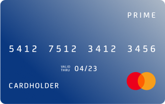

<div class="slide-chargeback">
    <div class="container">
        <div class="slide-chargeback__content" id="chargeback">
            <div>
                <h2 class="slide-chargeback__title">
                    Что такое Чарджбэк?
                </h2>
                <p class="slide-chargeback__par">
                    Чарджбек - это универсальная процедура отмены транзакции по карте Visa,
                    MasterCard, МИР платежными системами. Другими словами, это возврат
                    платежа на карту держателя. Чарджбэк можно получить практически от
                    любого учреждения или организации, если вы перевели деньги на банковский
                    счет юридического лица с карты.
                </p>
                <a href="#request" class="button button--wide button--bold">
                    Оставить заявку
                </a>
            </div>
            <div class="chargeback-image">
                
                
                
                
                
                
            </div>
        </div>
    </div>
</div>